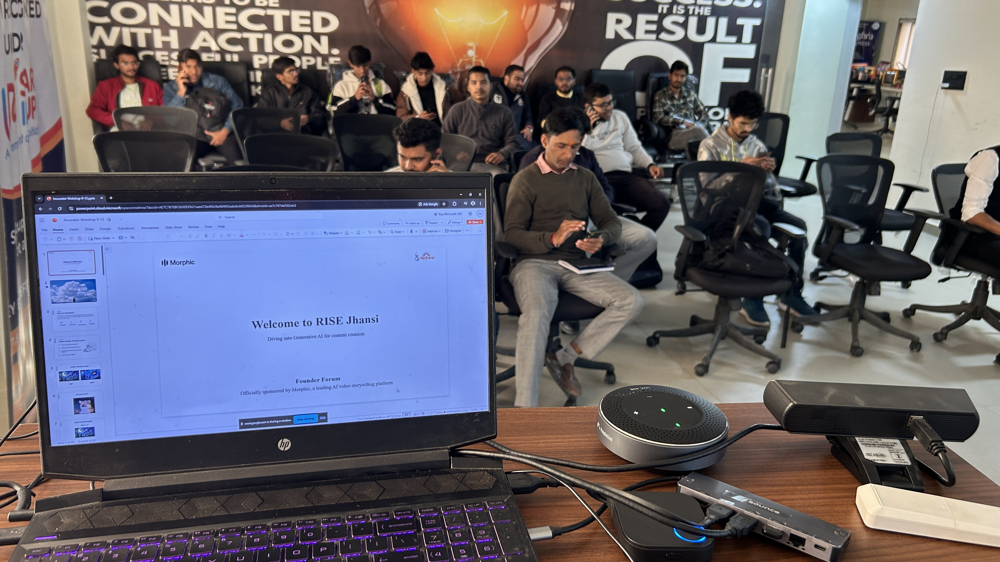
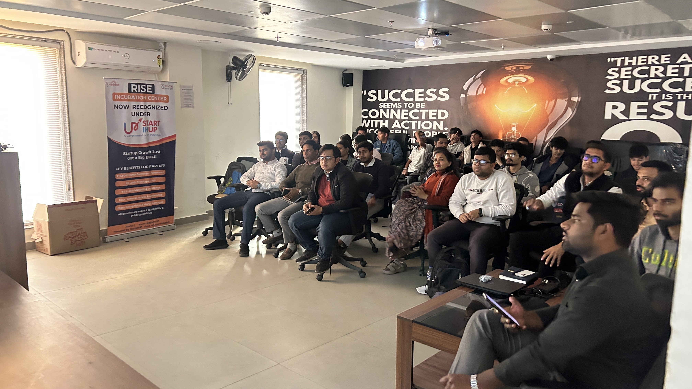
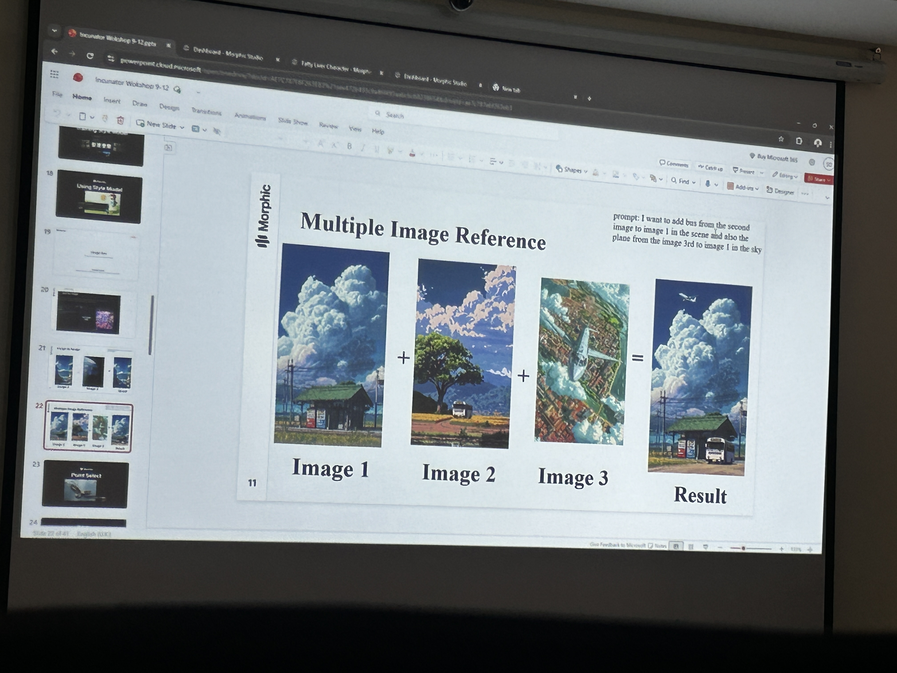
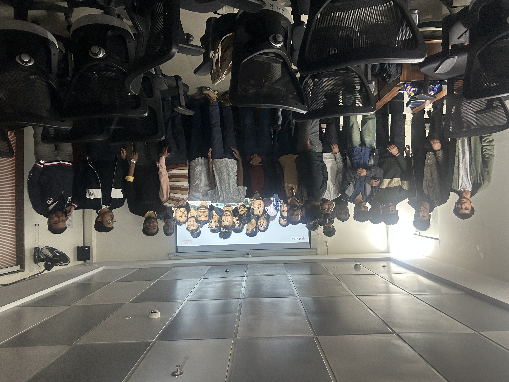

last november, i participated in india's biggest AI filmmaking hackathon.
the selection process was pretty straightforward but tough. submit a one minute film. theme was japan.
for our submission, we made this video:
what happened next surprised all of us.
the video started spreading. like, actually spreading. it went viral on X, got reposted everywhere, and random people started reaching out. teams from Y Combinator backed startups, including Landeed, asked if we could make commercials for them.
the moment that really hit was when Runtime featured our video themselves:
we didn't end up making the top 50 teams who were flown to mumbai. but honestly? that stopped mattering.
what i did gain was something more valuable. i learned how to make content go viral using AI. not by luck. by actually understanding pacing, visuals, hooks, and distribution.
about a week later, i was invited to RISE Incubator in jhansi.
that visit changed the direction of this whole story.
i met incredibly talented founders and builders working on solid startups. the problem wasn't product or effort. it was visibility. most of them didn't know how to market themselves online. and many didn't have the budget to hire agencies or creators.
so i asked a simple question. why not just teach them what i learned?
i decided to organize a hands on workshop on creating viral startup content using AI. practical. no fluff.
to make it accessible, i partnered with Morphic, who provided Morphic Pro accounts to all attendees so the workshop could be fully hands on.
the response was bigger than i expected.
60 people showed up. 40 in person and 20 online.
 everyone who attended got free pizza and snacks, because learning works better when people are relaxed and feel welcome.
the workshop wasn't about "growth hacks" or chasing trends. it was about:
- telling a clear story
- using AI as a tool, not a crutch
- and helping good work reach the people it deserves to reach
looking back, the most interesting part isn't that a video went viral.
it's that one experiment turned into shared knowledge. and that knowledge helped a local startup community show up better online.
that's the kind of ripple effect i care about.
